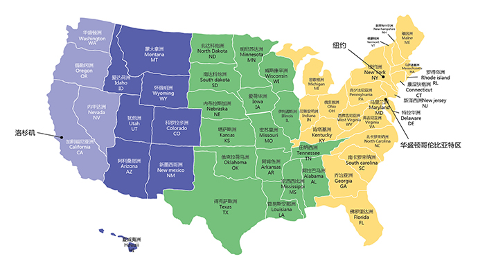

1992年美国政府立法通过了“区域中心实验法案”。申请人通过投资100万美金或者在特定区域内投资50万美金， 直接或间接为盈利型企业创造10个就业机会，就能全家获得移民身份，该移民类别称为EB-5。多数区域中心选择项目位于目标就业区（TEA）或人口稀少区（RA）：（1）目标就业区的失业率高于美国平均失业率的1.5倍；（2）人口稀少区指不属于大城市范围且人口低于2万的地区。该法案还规定给予投资经济特区的移民申请人更快速的审理过程。美国政府每年给EB-5签证申请者提供10000个名额。
2017年9月30日，投资移民法案再次延期，顺利延期至2017年12月8日。但根据国土安全局提案内容，投资款将从50万美金增长至135万美金，其他改革（如变更TEA定义，从严认定区域中心等）也将势在必行。
美国是由50个州、华盛顿特区和关岛等众多海外领土组成的联邦共和立宪制国家。国土面积963万平方公里，陆地面积世界第三，仅次于俄罗斯和中国。首都是华盛顿，通用英语，人口3.23亿，仅次于中国和印度。美国大部分地区 属于大陆性气候，南部属亚热带气候。
美国是世界上第一大进口国和第三大出口国。自1870年代以来，美国国民经济就高居全球第一，其政治、经济、军事、娱乐等众多领域在全球的影响力巨大。
